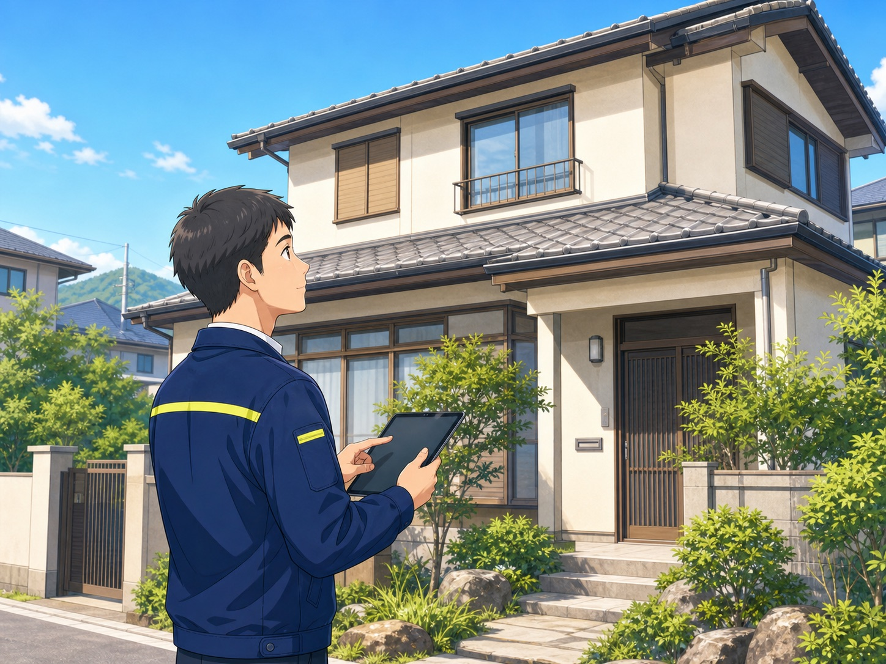

確かな状況判断
刻々と変わる車や人の動きを捉え、現場に合わせて安全を優先した誘導を行います。
交通誘導警備
工事車両・歩行者・一般車両が行き交う現場で、安全で円滑な通行を支えます。
対応エリア 袋井市・静岡県西部
私たちの使命
安全を守る仕事に、近道はありません。
一つひとつの現場に真摯に向き合い、周囲への目配りと丁寧な声かけを積み重ねる。 セイブ警備は、地域の皆さまが安心して過ごせる環境を、現場の最前線から支えます。
警備事業
セイブ警備の主事業です。道路工事や建設現場を中心に、状況を的確に判断し、 歩行者・一般車両・作業車両の安全でスムーズな通行を支えます。
片側交互通行、通行止め、工事車両の出入口など、現場ごとの条件に応じて柔軟に対応。 周囲への配慮と分かりやすい誘導で、事故や混乱を未然に防ぎます。
刻々と変わる車や人の動きを捉え、現場に合わせて安全を優先した誘導を行います。
通行する方や近隣の皆さまへ、分かりやすい合図と落ち着いた声かけを徹底します。
袋井市を拠点に静岡県西部へ。地域の道路事情を踏まえ、誠実に対応します。
暮らし・建物サポート
警備で培った責任感と細やかな目配りを、暮らしの安心にも。 空き家の見守りから整理・清掃まで、状況に合わせてご相談を承ります。

定期巡回、外観確認、通風・簡易清掃など、大切な建物を見守ります。
お気持ちに配慮しながら、品物を一つひとつ丁寧に整理します。
通常の清掃では難しい現場も、状況を確認したうえで適切に対応します。
大量の家財や生活用品を丁寧に仕分け、安心して暮らせる環境づくりを支えます。
※ 暮らし・建物サポートは準備中のサービスを含みます。対応内容・開始時期はお問い合わせください。
会社案内
私たちは、警備という仕事を通して地域社会の安心を支えます。 目の前の現場に責任を持ち、信頼される仕事を積み重ねていきます。
採用情報
経験の有無よりも、誠実に仕事へ向き合う姿勢を大切にしています。 交通誘導の仕事に興味がある方、地域に役立つ仕事を始めたい方をお待ちしています。
お問い合わせ
警備のご依頼はお電話で承ります。暮らし・建物サポートは、電話・LINE・Instagram・Googleフォームからご相談いただけます。